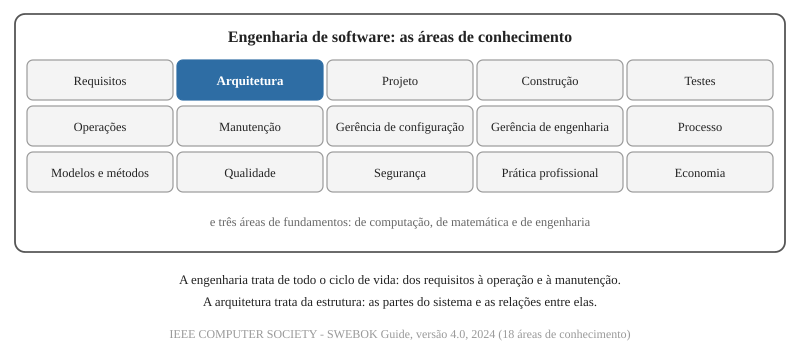

Engenharia de software e arquitetura de software
Programação Avançada - Aula 10
https://github.com/anchietajunior/sala/tree/main/disciplinas/programacao-avancada
Universidade Unirios
Objetivos da aula
- Distinguir engenharia de software de arquitetura de software pelo foco de cada uma;
- Descrever como o MVC e o Ports and Adapters separam as responsabilidades do código, com o ganho e o custo de cada um;
- Localizar no projeto o domínio, a decisão de arquitetura em vigor e a responsabilidade de cada arquivo;
- Escrever as decisões do projeto para um agente de IA: o AGENTS.md, as rules, uma skill de revisão de código, um ADR e uma spec;
- Avaliar a análise que o agente faz do projeto: aceitar ou recusar cada achado com base na regra e no motivo dela.
A rota summarize_book reúne quatro responsabilidades
book = session.get(models.Book, book_id)
if book is None or not current_user.can_access(book):
raise HTTPException(status_code=404, detail="Book not found")
try:
book_summary = generate_book_summary(book)
except (httpx2.HTTPError, ValueError):
raise HTTPException(status_code=502, detail="The AI service failed to summarize the book")
if not book_summary.known_book:
raise HTTPException(status_code=422, detail="The AI model does not know this book")
book.ai_summary = book_summary.summary
session.commit()
session.refresh(book)
return book
- Em
routers/books.py, a função responde em HTTP (404, 502, 422), aplica a regra de acesso, conduz a sequência gerar, decidir e gravar, e trata as falhas da biblioteca que chama o Gemini; - Nenhum arquivo do projeto registra se essa é a organização pretendida.
As decisões do projeto estão escritas para pessoas
| Arquivo | O que registra |
|---|---|
README.md | como executar, os endpoints e as dependências |
CONTEXT.md | o glossário do domínio, o assunto de que o sistema trata: User, Book, Reading Progress |
docs/adr/ | as decisões e o motivo de cada uma: convenções da API, async def ou def, ferramentas de teste |
- Nenhum deles declara em qual arquivo fica uma regra do domínio nem qual módulo pode importar qual;
- Quem acrescenta uma rota, uma pessoa ou um agente de IA, repete o que encontra ou adota outra organização;
- Nada obriga um agente de IA a ler esses arquivos: o que o pedido não cita, ele infere do código.
O termo "engenharia de software" nasceu de uma crise
- Outubro de 1968, Garmisch, Alemanha: uma conferência do Comitê de Ciência da OTAN reúne a academia e a indústria para discutir projetos de software atrasados, acima do orçamento e pouco confiáveis - a "crise do software";
- O nome da conferência foi escolhido para provocar:
A expressão "engenharia de software" foi escolhida deliberadamente por ser provocativa, ao implicar a necessidade de a fabricação de software se basear nos tipos de fundamentos teóricos e de disciplinas práticas que são tradicionais nos ramos estabelecidos da engenharia.
NAUR, P.; RANDELL, B. (eds.) - Software Engineering: Report on a Conference Sponsored by the NATO Science Committee, 1969, tradução livre
Uma abordagem sistemática, disciplinada e quantificável
Engenharia de software: a aplicação de uma abordagem sistemática, disciplinada e quantificável ao desenvolvimento, à operação e à manutenção de software; isto é, a aplicação da engenharia ao software.
- Sistemática: segue um método que pode ser repetido e ensinado;
- Disciplinada: a equipe cumpre as regras que ela mesma definiu;
- Quantificável: o resultado é medido - testes que passam, defeitos encontrados, tempo de resposta;
- Desenvolvimento, operação e manutenção: o objeto é a vida inteira do software, não só a escrita do código.
IEEE Std 610.12-1990 - IEEE Standard Glossary of Software Engineering Terminology, tradução livre
A arquitetura é uma das áreas da engenharia de software

A parte mais difícil é decidir o que construir
A parte mais difícil de construir um sistema de software é decidir precisamente o que construir.
- Frederick Brooks, No Silver Bullet (1986): o trabalho tem uma parte essencial - conceber a estrutura conceitual do software: os dados, as relações entre eles, os algoritmos - e uma parte acidental - representar essa estrutura numa linguagem de programação;
- As linguagens de alto nível e os ambientes de desenvolvimento reduziram o trabalho acidental. O trabalho essencial continua com a equipe;
- Entre as promessas que Brooks examinou no artigo estão a inteligência artificial e a "programação automática".
BROOKS, F. P. - No Silver Bullet: Essence and Accidents of Software Engineering, IEEE Computer, 1987, tradução livre
Domínio: o assunto a que o usuário aplica o programa
Domínio: uma esfera de conhecimento, influência ou atividade. A área de assunto à qual o usuário aplica um programa é o domínio do software.
- Eric Evans, Domain-Driven Design: Tackling Complexity in the Heart of Software (2003) - a definição, em tradução livre;
- DDD (domain-driven design, projeto guiado pelo domínio): a abordagem em que a equipe concentra o esforço no domínio, constrói o modelo junto de quem conhece o assunto e usa uma só linguagem;
- O domínio do Reading Tracker é o acompanhamento de leituras: leitores, livros, páginas lidas, resumos. FastAPI, MySQL e React não fazem parte dele;
- Modelo (model): um sistema de abstrações que descreve aspectos selecionados de um domínio. No código, as classes
UsereBook.
EVANS, E. - Domain-Driven Design, Addison-Wesley, 2003 · EVANS, E. - Domain-Driven Design Reference, 2015
O mesmo domínio, dito de duas formas
| Termo técnico | Para quem não é da área | No Reading Tracker |
|---|---|---|
| domínio (domain) | o assunto de que o sistema trata | o acompanhamento de leituras |
| regra do domínio, ou regra de negócio (business rule) | o que o assunto exige, com computador ou sem | cada leitor vê só os próprios livros: User.can_access |
| modelo do domínio (domain model) | a descrição do assunto dentro do sistema | User, Book e Book.progress, em models.py |
| especialista do domínio (domain expert) | quem conhece o assunto | um leitor, um bibliotecário |
- O critério para reconhecer uma regra do domínio: ela continua verdadeira se o sistema trocar de linguagem, de banco de dados ou de framework;
- "Responder 404" não é regra do domínio: é HTTP. "O leitor não acessa o livro de outro leitor" é.
EVANS, E. - Domain-Driven Design, 2003
Linguagem ubíqua: um nome por conceito, em toda parte
Linguagem ubíqua: uma linguagem estruturada em torno do modelo do domínio e usada por todos os membros da equipe, dentro de um contexto delimitado, para conectar todas as atividades da equipe com o software.
**User**:
Pessoa cadastrada no sistema, dona dos próprios livros. Um User comum só enxerga os Books que ele mesmo cadastrou.
_Avoid_: conta, account, member
- Ubíqua: presente em toda parte. Evans pede a mesma linguagem nos diagramas, na escrita, na fala e no código:
Useré o termo do glossário, a classe emmodels.pye a tabelausers; - O
CONTEXT.mdé a linguagem ubíqua do projeto, por escrito. A linha Avoid lista os sinônimos recusados: dois nomes para um conceito viram dois conceitos no código; - Contexto delimitado (bounded context): a fronteira dentro da qual um modelo vale. Aqui, o projeto inteiro.
EVANS, E. - Domain-Driven Design Reference, 2015, tradução livre
Recapitulando - engenharia de software
- O termo vem da conferência da OTAN de 1968, em resposta a projetos atrasados e pouco confiáveis;
- É a aplicação de uma abordagem sistemática, disciplinada e quantificável ao desenvolvimento, à operação e à manutenção (IEEE 610.12);
- A arquitetura é uma das áreas da engenharia (SWEBOK);
- O essencial é decidir o que construir; escrever o código é a parte acidental (Brooks, 1986);
- O domínio é o assunto a que o usuário aplica o programa, e a linguagem ubíqua dá um só nome a cada conceito dele (Evans, 2003).
Arquitetura: elementos, relações e princípios de evolução
Arquitetura: os conceitos ou propriedades fundamentais de um sistema em seu ambiente, incorporados em seus elementos, em suas relações e nos princípios de seu projeto e de sua evolução.
- Elementos: as partes - no projeto,
routers/,models.py,schemas.py, o banco de dados e o frontend; - Relações: qual parte aciona qual, e qual módulo importa qual;
- Princípios: as regras que cada mudança futura deve respeitar;
- Bass, Clements e Kazman (2003): a estrutura ou as estruturas do sistema, que compreendem os elementos de software, as propriedades externamente visíveis desses elementos e as relações entre eles.
ISO/IEC/IEEE 42010:2011 - Architecture description, tradução livre · BASS, L.; CLEMENTS, P.; KAZMAN, R. - Software Architecture in Practice, 2ª ed., 2003
Arquitetura são as decisões difíceis de mudar
- Ralph Johnson, citado por Martin Fowler (2003): nos projetos bem-sucedidos, os desenvolvedores experientes compartilham um entendimento do projeto do sistema, e esse entendimento é a arquitetura - as decisões que se gostaria de acertar cedo;
- Fowler conclui: arquitetura é o que as pessoas percebem como difícil de mudar.
| Decisão | O que a mudança altera |
|---|---|
| o texto de uma mensagem de erro | uma linha |
| o nome de um campo do Book | o model, o schema, o banco e o frontend |
| o arquivo em que ficam as regras do domínio | todas as rotas e todos os testes |
Quanto mais partes do sistema uma mudança alcança, mais arquitetural é a decisão.
FOWLER, M. - Who Needs an Architect?, IEEE Software, 2003
Toda decisão de arquitetura é uma troca
- Mark Richards e Neal Ford (2020) enunciam duas leis da arquitetura de software: "tudo em arquitetura de software é uma troca" e "o porquê é mais importante que o como";
- Troca (trade-off): obter uma propriedade custa outra. Mais camadas isolam as regras do domínio e multiplicam os arquivos;
- Uma organização adotada sem o porquê tem o custo certo e o benefício desconhecido.
RICHARDS, M.; FORD, N. - Fundamentals of Software Architecture, O'Reilly, 2020, tradução livre
Engenharia e arquitetura: focos diferentes
| Engenharia de software | Arquitetura de software | |
|---|---|---|
| Pergunta | Como construir, verificar, entregar e manter o software de forma sistemática? | Quais são as partes, o que cabe a cada uma e qual depende de qual? |
| Abrange | requisitos, arquitetura, construção, testes, operação, manutenção e gerência | a estrutura do sistema e as regras da evolução dela |
| No projeto | pytest, git, requirements.txt, os ADRs e o README | a divisão em routers/, models.py e schemas.py; a direção das dependências |
| Falha típica | código sem teste, sem controle de versão, sem registro das decisões | regra do domínio repetida em vários arquivos; módulo que depende de todos os outros |
Decidir a estrutura é uma das atividades da engenharia; verificar, entregar e manter são as outras.
Separar responsabilidades: cada módulo esconde uma decisão
- Separação de responsabilidades (separation of concerns): estudar um aspecto do problema por vez, isolado dos demais (Dijkstra, 1974);
- Ocultação de informação (information hiding): cada módulo esconde uma decisão de projeto que pode mudar; os outros módulos conhecem só a interface dele (Parnas, 1972);
- No projeto,
gemini.pyesconde como o Gemini é chamado: a URI, o modelo e o header da chave; - A rota, porém, importa
httpx2para capturarhttpx2.HTTPError: a decisão "qual cliente HTTP" saiu do módulo que deveria escondê-la.
DIJKSTRA, E. W. - On the role of scientific thought (EWD 447), 1974 · PARNAS, D. - On the Criteria To Be Used in Decomposing Systems into Modules, CACM, 1972
Recapitulando - arquitetura de software
- Arquitetura: os elementos, as relações e os princípios de evolução de um sistema (ISO/IEC/IEEE 42010);
- São as decisões difíceis de mudar (Fowler, 2003), e cada uma é uma troca com um porquê (Richards e Ford, 2020);
- O critério para dividir: cada módulo esconde uma decisão (Parnas, 1972);
- A engenharia trata de todo o ciclo de vida; a arquitetura, da estrutura.
Padrão: uma solução conhecida para um problema que se repete
Cada padrão descreve um problema que ocorre repetidas vezes em nosso ambiente e, em seguida, descreve o núcleo da solução para esse problema, de modo que se possa usar essa solução um milhão de vezes, sem nunca fazê-lo da mesma maneira duas vezes.
- Christopher Alexander, arquiteto de edifícios, em A Pattern Language (1977) - em tradução livre. A engenharia de software adotou a ideia nos catálogos de Gamma e colegas (1994) e de Buschmann e colegas (1996);
- Um padrão (pattern) tem quatro elementos: o nome, o problema, a solução e as consequências - o que a solução resolve e o que ela custa;
- Um padrão não é código pronto, biblioteca nem framework: é uma forma de organização, que cada projeto escreve no próprio código. Um framework pode adotar um padrão: o Ruby on Rails adota o MVC.
ALEXANDER, C. et al. - A Pattern Language, Oxford University Press, 1977 · GAMMA, E. et al. - Design Patterns, Addison-Wesley, 1994
Padrão arquitetural: como dividir o sistema inteiro
Um padrão arquitetural é o padrão que organiza o sistema inteiro. Ele responde a três perguntas:
| Pergunta | O que o padrão entrega | No projeto |
|---|---|---|
| Em quais partes o sistema se divide? | os nomes das partes | routers/, models.py e schemas.py |
| O que cabe a cada parte? | a responsabilidade de cada uma | models.py guarda as regras do domínio |
| Qual parte pode depender de qual? | as regras das relações | models.py não importa routers |
Um padrão arquitetural expressa um esquema fundamental de organização estrutural para sistemas de software. Ele fornece um conjunto de subsistemas predefinidos, especifica as responsabilidades deles e inclui regras e diretrizes para organizar as relações entre eles.
BUSCHMANN, F. et al. - Pattern-Oriented Software Architecture, Volume 1: A System of Patterns, Wiley, 1996, tradução livre
MVC: as regras separadas da apresentação
- O que é: um padrão arquitetural que divide em três papéis o código que atende o usuário - Model, View e Controller;
- A ideia principal: o que o sistema sabe e decide, as regras do domínio, fica separado de como isso é mostrado e de como o usuário o comanda;
- O efeito: a apresentação muda sem alterar as regras. A mesma regra de acesso a Books serve ao JSON da API, a uma tela e a um relatório;
- A regra das relações: a View e o Controller conhecem o Model; o Model não conhece nenhum dos dois.
FOWLER, M. - Patterns of Enterprise Application Architecture, 2002 (padrão Model View Controller)
Os três papéis do MVC
O propósito essencial do MVC é transpor a distância entre o modelo mental do usuário humano e o modelo digital que existe no computador.
- Trygve Reenskaug, cientista visitante no Xerox PARC entre 1978 e 1979, no ambiente Smalltalk - em tradução livre;
- Model (modelo): representa o conhecimento - os dados e as regras do domínio;
- View (visão): uma representação do model para quem o consulta;
- Controller (controlador): a ligação entre o usuário e o sistema - recebe a entrada e aciona o model e a view.
REENSKAUG, T. - Models-Views-Controllers, nota técnica, Xerox PARC, 1979 · FOWLER, M. - Patterns of Enterprise Application Architecture, 2002
Na web, cada requisição passa pelo Controller
![Fluxo do MVC numa aplicação web, em cinco passos. Um: o cliente envia a requisição HTTP ao Controller, que no projeto é a pasta routers. Dois: o Controller consulta ou altera o Model, que guarda os dados e as regras do domínio em models.py. Três: o Model envia SQL ao MySQL. Quatro: o Controller entrega os dados à View, a representação definida em schemas.py e devolvida como JSON. Cinco: a resposta volta ao cliente. Legenda: o Model não conhece o Controller nem a View; as regras do domínio não dependem de HTTP.](img/mvc.svg)
O Reading Tracker segue a separação do MVC
| Papel | Arquivo | Exemplo |
|---|---|---|
| Controller | routers/ | read_book: recebe o book_id, busca o Book e responde 200 ou 404 |
| Model | models.py | User.can_access e Book.progress |
| View | schemas.py | BookRead: o JSON que a API devolve |
- Numa API, a View é a representação em JSON. A tela fica com o React, que consome essa representação;
- A decisão está registrada no ADR-0002: estrutura por tipo de arquivo.
MVC: o ganho e o custo
Ganho
- Poucos conceitos: três papéis;
- Caminho curto da requisição ao banco de dados;
- Frameworks web como Ruby on Rails, Laravel e Spring MVC já organizam o projeto nesses papéis.
Custo
- O Model conhece o banco: as classes de
models.pyherdam daBasedo SQLAlchemy; - Testar a regra escrita numa rota exige HTTP e banco de dados;
- O padrão não impede que uma regra do domínio seja escrita no Controller.
Ports and Adapters: as regras no centro, a tecnologia na borda
- O que é: um padrão arquitetural que divide o sistema em duas regiões - a aplicação, no centro, e os adaptadores, em volta dela;
- A ideia principal: a aplicação contém as regras do domínio e não conhece nenhuma tecnologia. Ela conversa com o exterior por portas, e cada tecnologia se liga a uma porta por um adaptador;
- O efeito: a tecnologia muda sem alterar as regras, e as regras são testadas sem a tecnologia;
- A regra das relações: os adaptadores conhecem a aplicação; a aplicação não conhece os adaptadores.
COCKBURN, A. - Hexagonal Architecture, alistair.cockburn.us, 2005
A intenção do padrão, segundo Cockburn
Permitir que uma aplicação seja conduzida igualmente por usuários, programas, testes automatizados ou scripts em lote, e que seja desenvolvida e testada de forma isolada dos dispositivos e bancos de dados em que será executada.
- Alistair Cockburn, 2005, com o nome Hexagonal Architecture - a intenção do padrão, em tradução livre;
- O problema de origem: a regra de negócio escrita dentro do código da interface com o usuário ou do acesso ao banco, que não pode ser testada sem eles.
COCKBURN, A. - Hexagonal Architecture, alistair.cockburn.us, 2005
Porta e adaptador
- Porta (port): "uma porta identifica uma conversa com propósito" entre a aplicação e o exterior, descrita no vocabulário do domínio - "resumir um livro", "buscar um Book pelo id";
- Adaptador (adapter): para cada dispositivo externo, o código que converte a interface da porta nos sinais de que esse dispositivo precisa, e vice-versa - HTTP, SQL, a API do Gemini;
- Adaptadores de entrada acionam a aplicação: a rota HTTP, um teste automatizado;
- Adaptadores de saída são acionados por ela: o banco de dados, um serviço externo;
- O hexágono não é um hexágono porque o número seis importa: a figura dá espaço para desenhar as portas e os adaptadores necessários.
COCKBURN, A. - Hexagonal Architecture, 2005, tradução livre
As dependências apontam para a aplicação
![Um hexágono central representa a aplicação: as regras do domínio e os casos de uso, com Book, User e can_access. À esquerda, dois adaptadores de entrada, que acionam a aplicação: a rota FastAPI e o teste automatizado, ligados a uma porta de entrada. À direita, dois adaptadores de saída, que a aplicação aciona: SQLAlchemy com MySQL e httpx2 com Gemini, ligados a portas de saída. Todas as setas de dependência de código apontam para o hexágono. Legenda: a aplicação define as portas e não importa FastAPI, SQLAlchemy nem httpx2.](img/ports-and-adapters.svg)
A regra de dependência
As dependências do código-fonte só podem apontar para dentro.
- Robert C. Martin, The Clean Architecture (2012) - em tradução livre;
- Princípio da inversão de dependência (Martin, 1996): módulos de alto nível não dependem de módulos de baixo nível; os dois dependem de abstrações;
- A aplicação declara a porta; o adaptador importa a aplicação para implementá-la, nunca o contrário;
- A Onion Architecture (Jeffrey Palermo, 2008) e a Clean Architecture (Martin, 2012) aplicam a mesma regra, com outros nomes de camadas.
MARTIN, R. C. - The Clean Architecture, 2012 · MARTIN, R. C. - The Dependency Inversion Principle, C++ Report, 1996 · PALERMO, J. - The Onion Architecture, 2008
A mesma funcionalidade nas duas organizações
![Comparação dos arquivos que implementam o AI Summary em duas organizações. À esquerda, o MVC por tipo de arquivo, a organização atual do projeto, com quatro arquivos: routers/books.py, que concentra o HTTP, o acesso, a sequência do resumo e as falhas do Gemini; models.py; schemas.py; e gemini.py. À direita, uma organização ilustrativa em Ports and Adapters, com sete arquivos: domain/book.py, application/ports.py, application/summarize_book.py, adapters/http/books.py, adapters/db/books.py, adapters/ai/gemini.py e main.py, cada um com uma responsabilidade.](img/mesma-funcionalidade.svg)
Ports and Adapters: o ganho e o custo
Ganho
- A regra é testada sem HTTP, sem banco e sem rede: um dublê de teste (test double), objeto que substitui um componente real no teste, ocupa o lugar de cada adaptador;
- Trocar o Gemini por outro provedor altera um adaptador;
- O domínio não importa nenhum framework.
Custo
- Mais arquivos e mais interfaces para o mesmo comportamento;
- Cada funcionalidade nova atravessa a porta, o caso de uso e os adaptadores;
- O adaptador do banco converte entre os objetos do domínio e as classes do ORM.
Com uma só tecnologia por porta e poucas regras do domínio, o custo pode superar o ganho.
MESZAROS, G. - xUnit Test Patterns, 2007 (dublê de teste)
Três perguntas sobre a arquitetura do próprio projeto
- Em qual arquivo fica uma regra do domínio nova, e por quê?
- Qual módulo pode importar qual?
- O que a equipe ganha e o que ela paga por essa organização?
Uma equipe que não responde às três perguntas tem as pastas de um padrão, sem a decisão que as justifica.
Recapitulando - dois padrões arquiteturais
- Padrão: um nome, um problema, uma solução e as consequências (Alexander, 1977). O padrão arquitetural divide o sistema inteiro: partes, responsabilidades e relações (Buschmann et al., 1996);
- MVC (Reenskaug, 1979): separa as regras da apresentação. O Model não conhece a View nem o Controller;
- Ports and Adapters (Cockburn, 2005): separa as regras da tecnologia. A aplicação não conhece os adaptadores;
- Nenhum dos dois é o correto em todo projeto: cada um é uma troca.
Um agente de codificação lê, edita e executa
- Modelo de linguagem: modelo de aprendizado de máquina que prevê as próximas palavras de um texto (Jurafsky e Martin);
- Agente de codificação (coding agent): programa que usa um modelo de linguagem num ciclo - lê arquivos do repositório, propõe alterações, executa comandos e observa o resultado. Exemplos: OpenCode, Codex, Cursor, Claude Code e GitHub Copilot;
- A geração sorteia cada trecho do texto segundo probabilidades: o mesmo pedido pode produzir organizações de código diferentes.
JURAFSKY, D.; MARTIN, J. H. - Speech and Language Processing, 3ª ed.
Duas perguntas à turma
No projeto da sua equipe, em qual arquivo fica uma regra de negócio nova? Quem tomou essa decisão: a equipe ou o assistente de IA?
O que um integrante novo, ou um agente de IA, precisa ler para alterar o projeto sem contrariar as decisões da equipe?
O que o pedido não informa, o modelo infere
- Pedido: "adicione a busca de livros por autor". Ficam em aberto o arquivo da consulta ao banco, a regra de acesso, o nome da rota, o teste e a dependência nova;
- O modelo preenche cada lacuna com a continuação mais provável, a partir do código vizinho e dos projetos em que foi treinado;
- O resultado segue o que é mais frequente, não o que a equipe decidiu;
- Se a equipe não decidiu nada, não há critério para dizer que o resultado está errado.
Com assistente de IA: código menos seguro, mais confiança
- Perry, Srivastava, Kumar e Boneh (Stanford, 2023) compararam participantes com e sem um assistente de IA em tarefas de programação ligadas à segurança;
- Quem usou o assistente escreveu código significativamente menos seguro;
- Quem usou o assistente teve mais tendência a acreditar que o próprio código era seguro;
- Os participantes que confiaram menos na IA e trabalharam mais a formulação dos pedidos entregaram código com menos vulnerabilidades.
PERRY, N.; SRIVASTAVA, M.; KUMAR, D.; BONEH, D. - Do Users Write More Insecure Code with AI Assistants?, ACM CCS, 2023
Delegar a geração reduz a compreensão do código
- Shen e Tamkin (Anthropic, 2026): experimento aleatorizado com 52 desenvolvedores, a maioria em início de carreira, aprendendo uma biblioteca Python nova, com e sem assistente de IA;
- O grupo com IA obteve nota 17% menor na prova de compreensão aplicada em seguida; o ganho de velocidade não foi estatisticamente significativo;
- Os autores identificaram seis padrões de uso. Preservaram o aprendizado os que exigem esforço de compreensão: pedir explicações e fazer perguntas conceituais. Delegar a escrita do código ficou entre os de pior resultado;
- A relação entre padrão de uso e nota é uma observação qualitativa: o estudo não a demonstra como causa.
SHEN, J. H.; TAMKIN, A. - How AI Impacts Skill Formation, arXiv:2601.20245, 2026
O arquivo de instruções serve ao que foge do padrão
- Gloaguen e colegas (ETH Zurich, 2026) mediram o efeito de arquivos de contexto como o
AGENTS.mdna taxa de sucesso de agentes de codificação; - Arquivos gerados por um modelo de linguagem tiveram efeito marginal negativo; arquivos escritos pelos desenvolvedores, ganho marginal. Nenhum dos dois foi estatisticamente significativo;
- A conclusão dos autores: os arquivos de contexto são úteis para especificar práticas de codificação que fogem do padrão, e toda tentativa de melhorar o desempenho deve ser avaliada com rigor;
- O que foge do padrão num projeto são as decisões da própria equipe: só ela pode escrevê-las.
GLOAGUEN, T. et al. - Evaluating AGENTS.md: Are Repository-Level Context Files Helpful for Coding Agents?, arXiv:2602.11988, versão 3, 2026
O programa é a teoria que a equipe tem dele
A morte de um programa acontece quando a equipe de programadores que possui a teoria dele é dissolvida.
- Peter Naur, Programming as Theory Building (1985), em tradução livre: programar é a atividade pela qual os programadores formam uma teoria do problema e da solução; o código é só a parte escrita dela;
- Quem tem a teoria explica por que cada parte é como é e sabe modificar o programa sem desfazer a estrutura dele;
- Uma equipe que aceita código sem construir essa teoria não sabe dizer se a próxima alteração respeita ou desfaz a organização do projeto;
- O conhecimento de engenharia e de arquitetura é o que permite construir a teoria - e declará-la ao agente.
NAUR, P. - Programming as Theory Building, Microprocessing and Microprogramming, 1985
Recapitulando - o agente e as decisões da equipe
- O agente de codificação infere tudo o que o pedido não informa;
- Com assistente de IA, o código saiu menos seguro e a confiança aumentou (Perry et al., 2023); a compreensão caiu (Shen e Tamkin, 2026);
- O arquivo de instruções serve às práticas que fogem do padrão: as decisões da equipe (Gloaguen et al., 2026);
- Quem não sabe o que pedir não tem critério para recusar o que recebe.
Etapa 1 · O pedido sem instruções
Iniciar o agente na pasta do projeto
Mac (zsh)
cd projeto
opencode
Windows (PowerShell)
cd projeto
opencode
- OpenCode: um agente de codificação de código aberto, usado no terminal. O comando
opencodeo inicia na pasta atual; - Com outro agente, muda só o comando:
codexno Codex,claudeno Claude Code. No Cursor e no VS Code, abra a pastaprojetono editor; - O agente carrega os arquivos de instrução da pasta em que foi iniciado. Neste momento, a pasta
projetonão tem nenhum.
Documentação do OpenCode - opencode.ai/docs
Etapa 1 · O pedido sem instruções
Uma análise sem critério declarado
Analise a arquitetura do backend deste projeto e aponte os problemas.
Não altere nenhum arquivo.
- Copie a resposta para um arquivo fora do repositório: ela será comparada com a análise feita depois das regras;
- Quais critérios o agente usou para chamar algo de problema? De onde eles vieram?
- A resposta cita alguma decisão do projeto, como um ADR?
- O agente propõe trocar a organização do projeto por outra? Com qual justificativa?
Etapa 2 · AGENTS.md
AGENTS.md: um formato aberto de instruções para agentes
AGENTS.md é um formato simples e aberto para orientar agentes de codificação.
- Publicado em agosto de 2025, a partir do trabalho conjunto de OpenAI Codex, Amp, Jules (Google), Cursor e Factory; desde dezembro de 2025 é mantido pela Agentic AI Foundation, da Linux Foundation;
- É um arquivo Markdown comum, sem campos obrigatórios, na raiz do repositório;
- Com mais de um
AGENTS.mdno repositório, vale o mais próximo do arquivo editado; - O README é escrito para pessoas; o
AGENTS.md, para o agente. A documentação do OpenCode indica o conteúdo: comandos de build, notas de arquitetura, convenções de código e requisitos de verificação.
agents.md, tradução livre · Documentação do OpenCode - Instructions · OPENAI - OpenAI co-founds the Agentic AI Foundation, 2025
Etapa 2 · AGENTS.md
Cada ferramenta lê os próprios arquivos
| Ferramenta | Instruções do projeto | Outros arquivos de regras | Skills |
|---|---|---|---|
| OpenCode | AGENTS.md | o campo instructions do opencode.json | .opencode/skills/, .agents/skills/, .claude/skills/ |
| Codex | AGENTS.md | AGENTS.md em subpastas | .agents/skills/ |
| Cursor | AGENTS.md | .cursor/rules/*.mdc | .cursor/skills/, .agents/skills/, .claude/skills/ |
| GitHub Copilot | AGENTS.md, .github/copilot-instructions.md | .github/instructions/*.instructions.md | .github/skills/, .agents/skills/, .claude/skills/ |
| Gemini CLI | GEMINI.md; o AGENTS.md, por configuração | - | .gemini/skills/, .agents/skills/ |
| Claude Code | CLAUDE.md; o AGENTS.md, se não houver CLAUDE.md | .claude/rules/*.md | .claude/skills/ |
O projeto usa o que a maioria lê: o AGENTS.md, regras em Markdown comum e skills em .agents/skills/.
Documentação oficial de cada ferramenta, consultada em novembro de 2026: opencode.ai/docs · agents.md · cursor.com/docs · docs.github.com/copilot · geminicli.com/docs · code.claude.com/docs
Etapa 2 · AGENTS.md
O que o agente não descobre lendo o código?
Um agente lê todos os arquivos do repositório em segundos. O que ele continua sem saber sobre o projeto?
- Os comandos que executam e que testam o sistema, e o que precisa estar no ar;
- Onde estão registradas as decisões e os motivos;
- A arquitetura pretendida, que pode diferir da que o código tem hoje;
- As convenções e os limites: o que ele não pode fazer sem perguntar.
Documentação do OpenCode - Instructions (opencode.ai/docs/instructions)
Etapa 2 · AGENTS.md
O projeto e os comandos
# Reading Tracker
Rastreador de leituras: um User cadastra Books e acompanha o Reading Progress.
Backend em FastAPI, SQLAlchemy e MySQL. Frontend em React, Vite e Tailwind.
## Comandos
- Backend, em `backend/` com a venv ativa: `uvicorn main:app --reload`
- Testes do backend, em `backend/` e com o MySQL no ar: `pytest`
- Frontend, em `frontend/`: `npm run dev`
- Testes do frontend, em `frontend/`: `npm test -- --run`
- Arquivo novo:
projeto/AGENTS.md; - Com o comando de teste escrito, o agente verifica o próprio trabalho antes de encerrar a tarefa;
- "Com o MySQL no ar" é um fato que o código não mostra: importar o
main.pyexecuta ocreate_all.
Etapa 2 · AGENTS.md
Onde estão as decisões
## Onde estão as decisões
- `CONTEXT.md`: o glossário do domínio. Use os termos exatamente como estão lá.
- `docs/adr/`: as decisões do projeto e o motivo de cada uma. Leia o ADR antes de alterar o que ele decide.
- `README.md`: como executar, os endpoints e as dependências. Atualize-o quando um deles mudar.
- O
AGENTS.mdaponta para as decisões, sem copiá-las: um texto copiado fica desatualizado; - Cada linha diz o que o arquivo contém e quando o agente deve lê-lo ou atualizá-lo.
Etapa 2 · AGENTS.md
A arquitetura, declarada
## Arquitetura do backend
O backend segue a separação do MVC, com um tipo de arquivo para cada responsabilidade:
- `routers/` é o Controller: recebe a requisição, aciona o model e devolve o status e o schema de saída.
- `models.py` é o Model: as tabelas e as regras do domínio, como `User.can_access` e `Book.progress`.
- `schemas.py` define a representação: o formato de entrada e de saída da API.
- A integração com um serviço externo fica num módulo próprio, como `gemini.py`.
- A resposta à primeira das três perguntas: uma regra do domínio nova é um método do model;
- Escrever esta seção exige conhecer o padrão: o nome MVC, os papéis e o que cabe a cada um.
Etapa 2 · AGENTS.md
Convenções e limites
## Convenções
- Código em inglês. Comentário em pt-BR imediatamente acima de cada bloco.
- Toda mudança de comportamento tem um teste, e o `pytest` passa antes de a tarefa terminar.
- Segredos ficam em variáveis de ambiente, nunca no código.
## Limites
- Não instale dependência nova sem perguntar.
- Não altere `CONTEXT.md` nem `docs/adr/` sem pedido explícito.
- Convenção: o que todo código do projeto segue. Limite: o que o agente não faz por iniciativa própria;
- O arquivo inteiro tem 37 linhas. Ele entra no contexto em toda sessão: um arquivo longo deixa menos espaço para o código, e as instruções passam a ser menos seguidas. O Codex limita o total a 32 KiB; a documentação do Claude Code recomenda menos de 200 linhas por arquivo.
Documentação do Codex - AGENTS.md · Documentação do Claude Code - Memory
Etapa 3 · Rules
Rule: uma restrição curta, por assunto
- Rule (regra): um arquivo Markdown com as restrições de um assunto - a arquitetura, as rotas, os testes. Fica fora do
AGENTS.mdpara que ele continue curto; - Não existe uma pasta de rules comum a todas as ferramentas. Cada uma tem a sua:
.cursor/rules/no Cursor,.github/instructions/no GitHub Copilot,.claude/rules/no Claude Code; - A forma que serve a todas: arquivos Markdown comuns no repositório, e o
AGENTS.mddiz quando ler cada um; - A documentação do OpenCode descreve esse uso: o
AGENTS.mdcontinua conciso e aponta para as diretrizes detalhadas, que o agente carrega só quando a tarefa precisa delas.
Documentação do OpenCode - Rules (Referencing External Files) · cursor.com/docs/rules · docs.github.com/copilot · code.claude.com/docs
Etapa 3 · Rules
As pastas das rules e da skill
Mac (zsh)
mkdir -p docs/rules .agents/skills/revisao-de-codigo
Windows (PowerShell)
mkdir docs\rules, .agents\skills\revisao-de-codigo
- Dentro de
projeto/. As rules ficam emdocs/rules/, ao lado dos ADRs; a skill, em.agents/skills/, a pasta de skills que a maioria das ferramentas lê; - A pasta
.agentscomeça com ponto: no Mac, o Finder a oculta; no terminal,ls -aa mostra; - As duas pastas entram no git: as regras valem para toda a equipe, não para uma máquina.
Etapa 3 · Rules
Quais decisões um agente violaria sem saber?
Pedimos uma rota nova. O que, no código gerado, a equipe recusaria na revisão - mesmo com a rota funcionando?
- Uma regra do domínio escrita dentro da rota;
- A mesma regra escrita em dois arquivos;
- Um módulo que importa o que não deveria conhecer;
- Uma rota fora das convenções de URI, de status e de autenticação.
Etapa 3 · Rules
A rule de arquitetura
# Arquitetura do backend
- Uma rota trata de HTTP: lê a requisição, aciona o model e devolve o status e o schema de saída.
- Regra do domínio é método do model. Uma rota não decide quem acessa um Book nem quando um AI Summary é gravado.
- Cada regra do domínio existe em um só lugar. O acesso a Books é `User.can_access`.
- As dependências apontam para o model: `routers/` conhece `models` e `schemas`; `models.py` não importa `fastapi`, `schemas` nem `routers`.
- Só o módulo de uma integração conhece a biblioteca que ela usa. Uma rota não importa `httpx2`.
- Arquivo novo:
docs/rules/architecture.md; - As duas primeiras linhas são a separação de responsabilidades do MVC; a quarta, a direção das dependências; a quinta, a ocultação de informação de Parnas.
Etapa 3 · Rules
A rule das rotas
# Rotas da API
- URI por recurso, no plural, sob `/api`: `/api/books/{book_id}`. As rotas de autenticação `/signup` e `/login` são a exceção.
- Toda rota com corpo de resposta declara `response_model`; o `status_code` é declarado quando não for 200.
- Toda rota sob `/api` exige `get_current_user`. Recurso inexistente e recurso sem acesso respondem o mesmo 404.
- `def` quando a rota usa a sessão do banco ou outra chamada bloqueante; `async def` quando não há chamada bloqueante (ADR-0003).
- O corpo da requisição é um schema Pydantic, nunca um dicionário.
- Arquivo novo:
docs/rules/api.md; - Cada linha resume uma decisão já registrada no ADR-0002 ou no ADR-0003; a exceção também é escrita.
Etapa 3 · Rules
O AGENTS.md diz quando ler cada rule
## Regras
Leia a regra antes de alterar os arquivos que ela cobre:
- `docs/rules/architecture.md`: a arquitetura do backend. Vale para todo arquivo de `backend/`.
- `docs/rules/api.md`: as rotas da API. Vale para os arquivos de `backend/routers/`.
- Seção nova no
AGENTS.md, depois da seção de arquitetura; - Cada linha liga uma rule aos arquivos que ela cobre: o agente lê a regra das rotas quando a tarefa alcança as rotas;
- Vale para todo agente que lê o
AGENTS.md.
Etapa 3 · Rules
No OpenCode, as rules entram em toda sessão
{
"$schema": "https://opencode.ai/config.json",
"instructions": ["docs/rules/*.md"]
}
- Arquivo novo:
projeto/opencode.json, a configuração do OpenCode para o projeto; instructions: arquivos, padrões com*ou URLs que o OpenCode carrega junto doAGENTS.md, em toda sessão;- É o único arquivo do projeto que pertence a uma ferramenta. As regras continuam em Markdown comum: os outros agentes chegam a elas pelo
AGENTS.md.
Documentação do OpenCode - Instructions e Config (opencode.ai/docs)
Etapa 3 · Rules
Uma regra útil pode ser verificada
| Regra | Como se verifica |
|---|---|
| "Siga as boas práticas" | não se verifica: cada leitor entende uma coisa |
| "Escreva código limpo" | não se verifica |
"Uma rota não importa httpx2" | uma busca no arquivo aponta a linha |
"Toda rota sob /api exige get_current_user" | confere-se rota por rota |
- A documentação do Claude Code, da Anthropic, registra o efeito: quanto mais específicas e concisas as instruções, mais consistentemente o modelo as segue;
- Só escreve uma regra específica quem conhece a decisão e o motivo dela.
Documentação do Claude Code - Memory, tradução livre
Etapa 4 · Skill
Revisão de código: o exame por quem não escreveu
- Revisão de código (code review): o exame de uma mudança por alguém que não a escreveu, antes de ela entrar no código principal;
- Michael Fagan (IBM, 1976) formalizou a inspeção de código: papéis definidos e uma lista de verificação;
- Bacchelli e Bird (2013) estudaram a revisão na Microsoft: o motivo declarado é encontrar defeitos, e os resultados mais frequentes são a transferência de conhecimento e as soluções alternativas;
- A lista de verificação da equipe pode ser escrita uma vez e executada pelo agente sempre na mesma ordem.
FAGAN, M. E. - Design and code inspections to reduce errors in program development, IBM Systems Journal, 1976 · BACCHELLI, A.; BIRD, C. - Expectations, Outcomes, and Challenges of Modern Code Review, ICSE, 2013
Etapa 4 · Skill
Agent Skill: um procedimento carregado sob demanda
- Skill: uma pasta com um arquivo
SKILL.mdque ensina ao agente um procedimento - os passos, a ordem e o formato do resultado; - Lançada pela Anthropic em outubro de 2025 e publicada como padrão aberto em dezembro de 2025 (agentskills.io); desde outubro de 2026 é um projeto da Agentic AI Foundation;
- O arquivo começa com o frontmatter, um bloco de metadados em YAML entre linhas
---. O padrão exige dois campos:nameedescription; - O agente mantém no contexto só o nome e a descrição; o corpo é carregado quando a tarefa pede;
- O padrão não fixa a pasta.
.agents/skills/é a convenção adotada entre ferramentas: OpenCode, Codex, Cursor, GitHub Copilot e Gemini CLI a leem.
Agent Skills - agentskills.io/specification · Documentação do OpenCode - Skills · LINUX FOUNDATION - Agentic AI Foundation, 2026
Etapa 4 · Skill
Três artefatos, três momentos de carga
![Três arquivos do repositório e o momento em que cada um entra no contexto do modelo, que é o texto lido a cada pedido. O AGENTS.md, com o projeto, os comandos e onde estão as decisões, entra em toda sessão. As rules em docs/rules, com as restrições de cada parte do código, entram quando o AGENTS.md manda ler, ou sempre, por configuração. A skill revisao-de-codigo, em .agents/skills, um procedimento de vários passos, tem a descrição carregada em toda sessão e o corpo carregado quando a tarefa pede. Legenda: o contexto é limitado; o que entra em toda sessão precisa ser curto e específico.](img/contexto-do-agente.svg)
Etapa 4 · Skill
O que um revisor confere antes de aprovar?
A mudança funciona e os testes passam. O que mais um revisor experiente examina antes de aprovar?
- Arquitetura: cada responsabilidade está no lugar que a equipe decidiu?
- Correção: quais entradas quebram o código?
- Segurança: quem pode chamar, e o que essa pessoa alcança?
- Testes: o caminho de sucesso e os caminhos de erro estão cobertos?
- Clareza: os nomes dizem o que o código faz?
Etapa 4 · Skill
O frontmatter: o nome e quando usar
---
name: revisao-de-codigo
description: Revisa o código do Reading Tracker contra as decisões do projeto. Use quando pedirem revisão de código (code review), antes de um commit ou de um pull request.
---
- Arquivo novo:
.agents/skills/revisao-de-codigo/SKILL.md; name: até 64 caracteres, só letras minúsculas, números e hífens, igual ao nome da pasta. É por esse nome que o agente carrega a skill;description: até 1.024 caracteres. É o único trecho que o agente lê antes de decidir se usa a skill: diga o que ela faz e quando usá-la;- O nome em português evita a colisão com os comandos de revisão que as ferramentas já trazem.
Agent Skills - agentskills.io/specification
Etapa 4 · Skill
O que ler antes de revisar
# Revisão de código
Aponte o que diverge das decisões do projeto, com evidência.
A revisão só relata: não altere arquivos.
## Antes de revisar
1. Leia `AGENTS.md`, `CONTEXT.md`, as rules em `docs/rules/` e os ADRs em `docs/adr/`.
2. Se o pedido indica arquivos, revise esses arquivos.
3. Sem indicação, revise as mudanças pendentes: `git status` e `git diff`.
- A revisão compara o código com as decisões do projeto: por isso o primeiro passo é lê-las;
- "Só relata" separa a revisão da correção: a equipe decide o que fazer com cada achado.
Etapa 4 · Skill
A lista de verificação, em ordem
## O que conferir, nesta ordem
1. **Arquitetura**: cada responsabilidade está no arquivo que a rule de arquitetura define? As dependências apontam na direção permitida?
2. **Correção**: o código faz o que promete? Quais entradas o quebram?
3. **Segurança**: toda rota sob `/api` exige autenticação e aplica a regra de acesso? Há segredo no código?
4. **Testes**: o caminho de sucesso e cada caminho de erro têm teste?
5. **Clareza**: os nomes revelam a intenção? Os termos do domínio seguem o `CONTEXT.md`?
- A arquitetura vem primeiro: um erro de estrutura invalida o detalhe que vem depois;
- Cada item é uma pergunta com resposta verificável no código.
Etapa 4 · Skill
O formato do relato
## Como relatar
Para cada achado, informe o arquivo e a linha, a regra ou o ADR violado, a consequência e a correção sugerida.
Classifique cada achado:
- **bloqueia**: viola uma regra ou um ADR, ou quebra um comportamento;
- **melhoria**: não viola regra, mas reduz risco ou esforço;
- **dúvida**: depende de uma decisão que o projeto ainda não registrou.
Sem achados numa etapa, escreva o que foi conferido nela.
- Arquivo, linha e regra tornam cada achado conferível: a equipe abre o arquivo e confirma ou recusa;
- A classe dúvida expõe as decisões que a equipe ainda não tomou.
Etapa 5 · ADRs e specs
ADR: o registro de uma decisão de arquitetura
Manteremos uma coleção de registros das decisões "arquiteturalmente significativas": as que afetam a estrutura, as características não funcionais, as dependências, as interfaces ou as técnicas de construção.
- Michael Nygard, Documenting Architecture Decisions (2011) - em tradução livre;
- ADR (architecture decision record, registro de decisão de arquitetura): um arquivo de texto curto por decisão, guardado no repositório do projeto;
- As partes: título, contexto, decisão, status e consequências;
- Uma decisão revertida não é apagada: o registro antigo permanece, marcado como substituído.
NYGARD, M. - Documenting Architecture Decisions, cognitect.com, 2011
Etapa 5 · ADRs e specs
O código mostra o que foi feito; o ADR, o porquê
| ADR do projeto | A decisão | O que o código não mostra |
|---|---|---|
0003 | async def onde há motivo, def no resto | a alternativa rejeitada: tornar tudo async def; revisa uma decisão do ADR-0002 |
0005 | AI Summary pelo Gemini, chamado com o httpx2 | o SDK do Google foi rejeitado: esconde a requisição HTTP e acrescenta dependências |
0001 | rotas sem autenticação | status revogado: a decisão não vale mais, e o registro permanece |
- Um agente que lê só o código não sabe que o SDK foi rejeitado, e pode propor a instalação dele;
- A rule diz o que fazer, em uma linha; o ADR guarda o motivo e as alternativas.
Etapa 5 · ADRs e specs
A decisão de arquitetura ganha um ADR
# Regras do domínio no model, rotas só com HTTP
O ADR-0002 definiu a estrutura por tipo de arquivo, sem dizer em qual arquivo fica uma regra do domínio.
Sem essa decisão, cada rota nova escolhe um lugar: a regra de acesso a Books já aparece em `models.py` e em `routers/books.py`.
## A decisão
- O backend segue a separação do MVC: `routers/` é o Controller, `models.py` é o Model e `schemas.py` define a representação.
- Regra do domínio é método do model. A rota lê a requisição, aciona o model e devolve o status e o schema de saída.
- As restrições que decorrem desta decisão ficam em `docs/rules/architecture.md`.
- Arquivo novo:
docs/adr/0006-regras-do-dominio-no-model.md. O título é a decisão; o primeiro parágrafo, o contexto; - A rule de arquitetura já existe: o ADR registra de onde ela vem.
Etapa 5 · ADRs e specs
As consequências e as alternativas rejeitadas
## Consequências
- Uma regra do domínio é testada no model, sem HTTP.
- O model continua ligado ao SQLAlchemy: testar uma regra que consulta o banco exige um banco.
- O código atual diverge em três pontos de `routers/books.py`, registrados como problema em aberto.
## Alternativas rejeitadas
- **Ports and Adapters.** Isola as regras do domínio de FastAPI, SQLAlchemy e httpx2, e permite testá-las com dublês. O AI Summary passaria de quatro para sete arquivos. O projeto tem uma tecnologia por porta e poucas regras: hoje o custo supera o ganho. A decisão muda se surgir um segundo provedor de IA ou uma segunda forma de entrada.
- **Deixar sem registro.** Cada pessoa e cada agente de IA inferem uma organização diferente a partir do código.
- As consequências listam o ganho e o custo: a decisão é uma troca;
- A alternativa rejeitada traz a condição em que a decisão muda. Nesse dia, um ADR novo substitui este.
Etapa 5 · ADRs e specs
Spec: o que construir, de forma verificável
Especificação: um documento que especifica, de maneira completa, precisa e verificável, os requisitos, o projeto, o comportamento ou outras características de um sistema ou componente e, com frequência, os procedimentos para determinar se essas condições foram satisfeitas.
- Spec (specification, especificação): a resposta escrita à dificuldade apontada por Brooks - decidir precisamente o que construir;
- Entre as qualidades que a IEEE 830 (1998) exige de uma especificação de requisitos: não ambígua, completa, consistente e verificável;
- Com agentes de IA, a prática recebeu o nome de spec-driven development (desenvolvimento guiado por especificação): a spec é escrita antes do código, e o agente implementa a partir dela.
IEEE Std 610.12-1990, tradução livre · IEEE Std 830-1998 · GITHUB - Spec-driven development with AI, github.blog, 2025
Etapa 5 · ADRs e specs
Critério de aceitação: dado, quando, então
Dado um contexto inicial,
quando um evento ocorre,
então certos resultados são garantidos.
- Critério de aceitação: uma condição verificável que a funcionalidade precisa cumprir para ser aceita;
- O formato Given, When, Then foi publicado por Dan North em Introducing BDD (2006), com a exigência de que os critérios de aceitação sejam executáveis;
- Cada critério corresponde a um teste automatizado: o "dado" prepara, o "quando" executa, o "então" verifica.
NORTH, D. - Introducing BDD, Better Software, 2006, tradução livre
Etapa 5 · ADRs e specs
A spec do AI Summary: o objetivo e as regras
# Spec: AI Summary
## Objetivo
O User pede um resumo curto de um Book, sem revelar o final, gerado por um modelo de linguagem.
## Regras
- O resumo fica gravado no Book. Cada novo pedido substitui o anterior.
- Se o modelo declara não conhecer o livro, nenhum resumo é gravado.
- Só quem pode acessar o Book pede o resumo dele.
- Arquivo novo:
docs/specs/ai-summary.md; - A spec usa os termos do glossário - User, Book - e não cita arquivo, biblioteca nem framework: ela descreve o comportamento, não a implementação.
Etapa 5 · ADRs e specs
A spec do AI Summary: os critérios de aceitação
## Critérios de aceitação
- Dado um Book que o User pode acessar, quando ele pede o resumo, então a API responde 200 e o Book traz o `ai_summary` gerado.
- Dado um Book que o modelo declara não conhecer, quando o User pede o resumo, então a API responde 422 e o `ai_summary` não muda.
- Dado um Book inexistente ou que o User não pode acessar, quando ele pede o resumo, então a API responde 404.
- Dada uma falha do serviço de IA, quando o User pede o resumo, então a API responde 502 e o `ai_summary` não muda.
## Fora do escopo
- Histórico dos resumos anteriores.
- Edição do resumo pelo User.
- Quatro critérios, quatro testes possíveis. "Fora do escopo" impede que o agente acrescente o que ninguém pediu.
Etapa 5 · ADRs e specs
O AGENTS.md passa a apontar para as specs
- `docs/specs/`: o comportamento esperado de cada funcionalidade e os critérios de aceitação. Leia a spec antes de alterar a funcionalidade.
- Uma linha nova na seção "Onde estão as decisões" do
AGENTS.md, abaixo da linha dodocs/adr/; - O
AGENTS.mdé o índice: cada documento novo do projeto entra nele com uma linha.
Etapa 5 · ADRs e specs
Cada documento responde a uma pergunta
| Documento | Pergunta | No projeto |
|---|---|---|
| Spec | O que o sistema deve fazer? | docs/specs/ai-summary.md |
| ADR | Por que esta decisão, e não outra? | docs/adr/0006-... |
| Rule | O que vale em todo código desta parte? | docs/rules/architecture.md |
| Skill | Como executar este procedimento? | .agents/skills/revisao-de-codigo/ |
AGENTS.md | Onde está cada um deles? | AGENTS.md |
A spec é assunto da engenharia de requisitos; o ADR, da arquitetura. Os dois existiam antes dos agentes de IA: o agente é mais um leitor.
Etapa 6 · Análise e revisão
O mesmo projeto, agora com critério declarado
Analise o backend conforme o AGENTS.md e as rules do projeto.
Liste cada divergência com o arquivo, a linha e a regra violada.
Não altere nenhum arquivo.
- Encerre o agente e inicie-o de novo em
projeto/: os arquivos de instrução são carregados no início da sessão; - O pedido cita o critério: as regras que a turma escreveu;
- "Não altere nenhum arquivo": primeiro a lista, depois a decisão da equipe sobre cada item.
Checkpoint: as divergências que o código tem hoje
| Arquivo e linha | O que o código faz | Regra ou decisão |
|---|---|---|
routers/books.py:2 e :99 | importa httpx2 e captura httpx2.HTTPError | "Uma rota não importa httpx2" |
routers/books.py:24 | filtra a lista por is_admin e user_id | "Cada regra do domínio existe em um só lugar" |
routers/books.py:102 | decide não gravar o resumo de livro desconhecido | "Uma rota não decide [...] quando um AI Summary é gravado" |
security.py:16 | SECRET_KEY escrita no código | "Segredos ficam em variáveis de ambiente" |
main.py:35 | def read_health, sem chamada bloqueante | ADR-0003: async def quando não há chamada bloqueante |
- A lista do agente varia a cada execução: abra o arquivo na linha citada e confirme cada achado antes de aceitá-lo;
- Um achado que cita regra que não existe, ou linha que não contém o que ele descreve, é recusado.
Etapa 6 · Análise e revisão
A revisão com a skill
Revise backend/routers/books.py com a skill revisao-de-codigo.
- O pedido em texto, com o nome da skill, serve a qualquer agente: o modelo carrega a skill pelo nome. Algumas ferramentas têm atalho:
$no Codex,/no Cursor e no Claude Code; - Confira o relato: os cinco itens aparecem na ordem? Cada achado tem arquivo, linha, regra, consequência e correção?
- Compare com o Checkpoint: quais achados se repetem? A skill encontrou algo de correção, de segurança ou de testes que a análise não trouxe?
- Escolha um achado classificado como dúvida: qual decisão a equipe precisa registrar para resolvê-lo?
Documentação do OpenCode - Skills · Documentação do Codex - Skills · cursor.com/docs/skills
Etapa 6 · Análise e revisão
O código cumpre a spec?
Verifique se o backend cumpre docs/specs/ai-summary.md.
Para cada critério de aceitação, cite o código que o cumpre e o teste que o verifica.
Não altere nenhum arquivo.
- Três dos quatro critérios não têm teste:
tests/test_books_api.pyverifica só o caminho de sucesso; - O critério do 502 não é cumprido em todos os casos: uma resposta do Gemini sem o campo
stepslançaKeyErroremgemini.py:48, a rota não o captura, e a API responde 500; - Cada lacuna vira um pedido preciso: um teste a escrever ou uma correção a fazer, com o critério que a justifica.
Etapa 6 · Análise e revisão
As duas análises, lado a lado
| Sem instruções | Com as decisões escritas | |
|---|---|---|
| Critério | inferido pelo modelo | declarado pela equipe |
| Achado | uma opinião sobre o código | um arquivo, uma linha e uma regra |
| Como se confere | não há com o que comparar | abre-se o arquivo e lê-se a regra |
| Quem decide | o modelo propõe e ninguém tem base para recusar | a equipe aceita, recusa ou muda a regra |
- Aceitar um achado, recusá-lo ou mudar a regra são três decisões de engenharia;
- Nenhuma delas pode ser tomada por quem não conhece o motivo da regra.
Recapitulando - as decisões escritas para o agente
AGENTS.md: o projeto, os comandos, onde estão as decisões, a arquitetura e os limites - em toda sessão;- Rules: restrições curtas e verificáveis, uma por assunto; o
AGENTS.mddiz quando ler cada uma; - Skill: um procedimento com ordem e formato de relato, carregado quando a tarefa pede;
- ADR (Nygard, 2011): o porquê de uma decisão. Spec: o que construir, com critérios de aceitação verificáveis;
- Todos só carregam o que a equipe decidiu. Sem decisão, não há o que escrever.
Exercício em sala
- A rule dos testes: escreva
docs/rules/tests.md, com três restrições que a turma considera obrigatórias num teste, e acrescente a linha dela na seção de regras doAGENTS.md. Cada restrição precisa ser verificável. Peça ao agente a lista de divergências embackend/tests/; - No projeto da equipe: escreva um ADR com a decisão de arquitetura do backend - o contexto, a decisão, as consequências e uma alternativa rejeitada. Resuma-o na seção de arquitetura do
AGENTS.md, peça ao agente as divergências e classifique cada achado: aceito, recusado ou a regra muda.
tests.md do primeiro exercício é descartável: apague-o, com a linha do AGENTS.md, ao final. No segundo, a equipe apresenta as consequências que registrou no ADR, um achado aceito e um recusado, com o motivo de cada decisão.Síntese da aula
- Engenharia de software é a aplicação de uma abordagem sistemática, disciplinada e quantificável ao desenvolvimento, à operação e à manutenção (IEEE 610.12). O domínio é o assunto a que o usuário aplica o programa, e a linguagem ubíqua dá um só nome a cada conceito dele (Evans, 2003);
- Arquitetura é a estrutura do sistema - elementos, relações e princípios de evolução (ISO/IEC/IEEE 42010) - e uma das áreas da engenharia; reúne as decisões difíceis de mudar, e cada uma é uma troca (Richards e Ford, 2020);
- Um padrão arquitetural define as partes do sistema, a responsabilidade de cada uma e as relações entre elas (Buschmann et al., 1996). O MVC (Reenskaug, 1979) separa as regras da apresentação; o Ports and Adapters (Cockburn, 2005) separa as regras da tecnologia. Cada padrão tem um ganho e um custo;
- Um agente de codificação infere o que o pedido não informa. O
AGENTS.md, as rules e a skill declaram as decisões da equipe; o ADR (Nygard, 2011) guarda o porquê, e a spec, o que construir. A análise passa a citar arquivo, linha e regra; - Escrever uma regra verificável e julgar um achado exigem conhecer a decisão e o motivo dela: quem não sabe o que pedir não tem critério para recusar o que recebe.
Referências
- NAUR, P.; RANDELL, B. (eds.). Software Engineering: Report on a Conference Sponsored by the NATO Science Committee. Garmisch, 1968; OTAN, 1969.
- IEEE. IEEE Standard Glossary of Software Engineering Terminology (IEEE Std 610.12-1990).
- IEEE COMPUTER SOCIETY. Guide to the Software Engineering Body of Knowledge (SWEBOK Guide), versão 4.0, 2024.
- BROOKS, F. P. No Silver Bullet: Essence and Accidents of Software Engineering. IEEE Computer, 1987.
- ISO/IEC/IEEE 42010:2011. Systems and software engineering - Architecture description.
- BASS, L.; CLEMENTS, P.; KAZMAN, R. Software Architecture in Practice. 2ª ed., Addison-Wesley, 2003.
- FOWLER, M. Who Needs an Architect?. IEEE Software, 2003. FOWLER, M. Patterns of Enterprise Application Architecture. Addison-Wesley, 2002.
- RICHARDS, M.; FORD, N. Fundamentals of Software Architecture. O'Reilly, 2020.
- DIJKSTRA, E. W. On the role of scientific thought (EWD 447), 1974. PARNAS, D. On the Criteria To Be Used in Decomposing Systems into Modules. CACM, 1972.
- EVANS, E. Domain-Driven Design: Tackling Complexity in the Heart of Software. Addison-Wesley, 2003. EVANS, E. Domain-Driven Design Reference. domainlanguage.com, 2015.
- ALEXANDER, C. et al. A Pattern Language. Oxford University Press, 1977. GAMMA, E. et al. Design Patterns. Addison-Wesley, 1994. BUSCHMANN, F. et al. Pattern-Oriented Software Architecture, Volume 1: A System of Patterns. Wiley, 1996.
- REENSKAUG, T. Models-Views-Controllers. Nota técnica, Xerox PARC, 1979.
- COCKBURN, A. Hexagonal Architecture. alistair.cockburn.us, 2005.
- MARTIN, R. C. The Dependency Inversion Principle. C++ Report, 1996. MARTIN, R. C. The Clean Architecture. blog.cleancoder.com, 2012. PALERMO, J. The Onion Architecture. jeffreypalermo.com, 2008.
- MESZAROS, G. xUnit Test Patterns: Refactoring Test Code. Addison-Wesley, 2007.
- JURAFSKY, D.; MARTIN, J. H. Speech and Language Processing. 3ª ed., rascunho - web.stanford.edu/~jurafsky/slp3.
- PERRY, N.; SRIVASTAVA, M.; KUMAR, D.; BONEH, D. Do Users Write More Insecure Code with AI Assistants?. ACM CCS, 2023.
- SHEN, J. H.; TAMKIN, A. How AI Impacts Skill Formation. arXiv:2601.20245, 2026.
- GLOAGUEN, T. et al. Evaluating AGENTS.md: Are Repository-Level Context Files Helpful for Coding Agents?. arXiv:2602.11988, versão 3, 2026.
- NAUR, P. Programming as Theory Building. Microprocessing and Microprogramming, 1985.
- FAGAN, M. E. Design and code inspections to reduce errors in program development. IBM Systems Journal, 1976. BACCHELLI, A.; BIRD, C. Expectations, Outcomes, and Challenges of Modern Code Review. ICSE, 2013.
- NYGARD, M. Documenting Architecture Decisions. cognitect.com, 2011. NORTH, D. Introducing BDD. Better Software, 2006. IEEE Std 830-1998, Recommended Practice for Software Requirements Specifications. GITHUB. Spec-driven development with AI. github.blog, 2025.
- AGENTS.md - agents.md. Agent Skills - agentskills.io/specification. Documentação do OpenCode - opencode.ai/docs (Instructions, Rules, Skills, Config); do Codex - learn.chatgpt.com/docs; do Claude Code - code.claude.com/docs (Memory); do Cursor - cursor.com/docs; do GitHub Copilot - docs.github.com/copilot; do Gemini CLI - geminicli.com/docs.